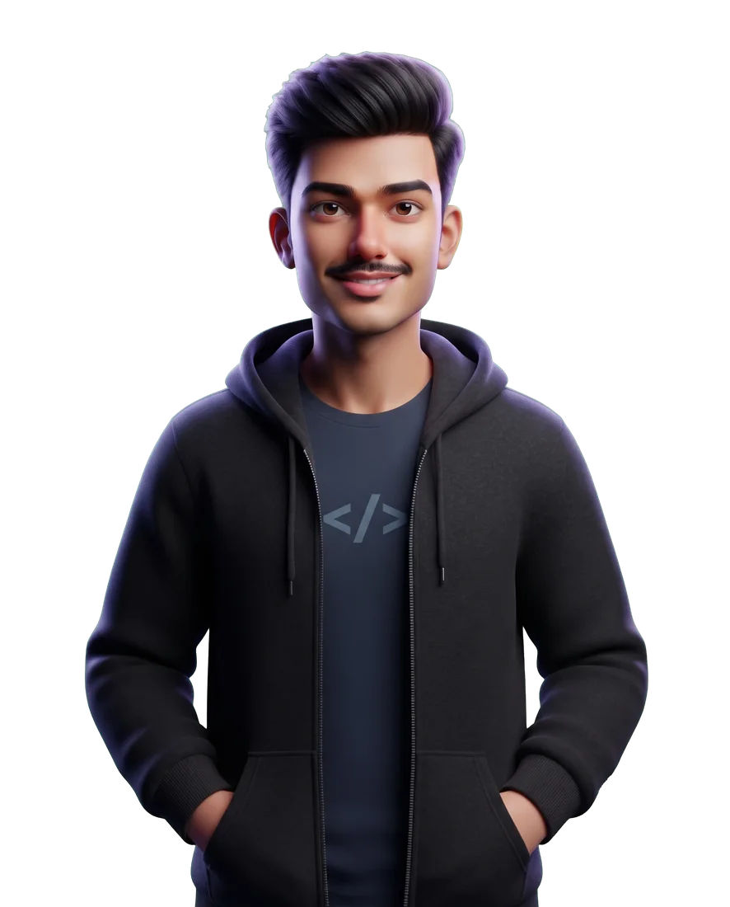
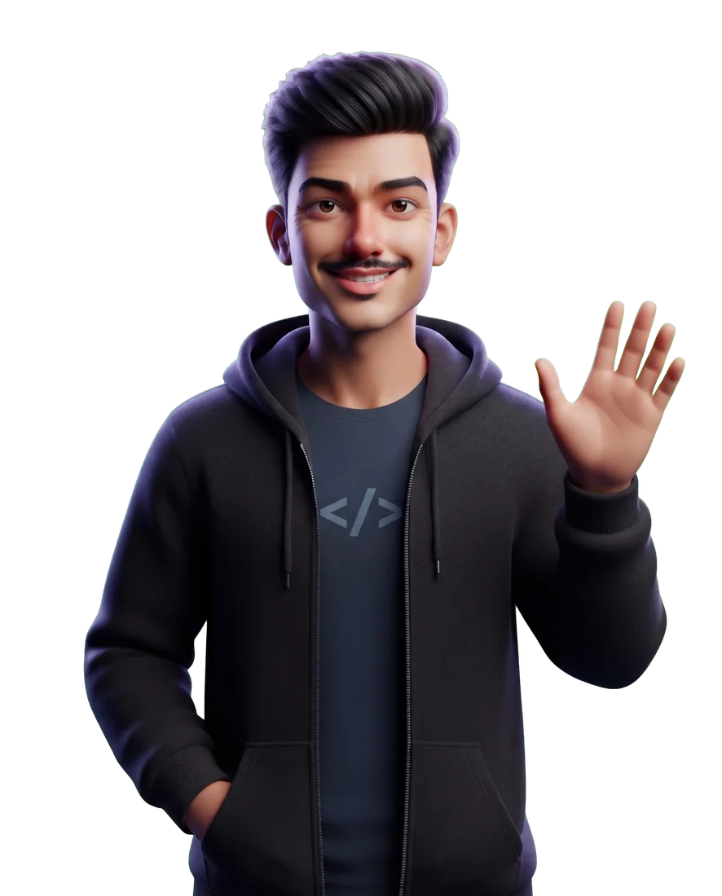

Two years making LLMs answer with proof, and scale from one user to a whole team.
I'm Prateek, an ML engineer at Synchronoss in Bangalore. I build RAG, agents and LLM inference that our engineering team relies on.
Each dot is a chunk of a real project, grouped by meaning. Watch a query pull its nearest neighbours. Drag to turn it, tap a cluster to open it.
Scroll to spin the ring. Tap a card for the problem, the decision, and the result.
Serving open models fast. Continuous batching, guided decoding, load testing for real concurrency.
Qdrant, Postgres, rerankers and tool-calling agents that must cite their evidence.
FastAPI on the AI side, Spring Boot microservices on the other.
Open to ML engineering roles and hard LLM problems: RAG, agents, inference.
prateekjanagouda1008@gmail.com